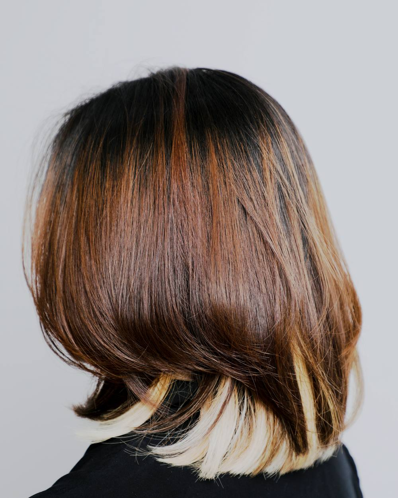
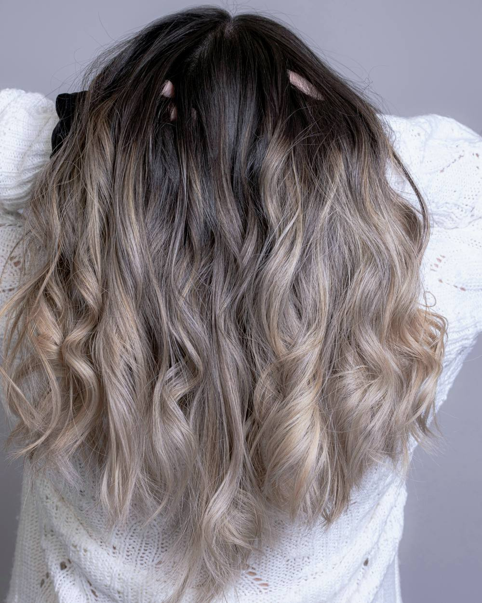

Copper, full head
Colour · 3 hr · from £120
Erin
9 Corbie Wynd, Falkirk
Colour · 3 hr 15 · from £115
Rhona, Erin
Everything here is priced before you sit down, and the person who does it is named.
Four of the things we are asked for most. Point at one and we will take it from there.
Colour · 3 hr · from £120
Erin

Cut · 1 hr 15 · £52
Sophie

Cut · 1 hr · £45
Rhona, Sophie
Opened Brackenwynd in 2011 with two chairs and a second-hand backwash. If a colour has gone wrong somewhere else, this is the chair it gets fixed in.
Colour correction, blondes
Does the balayage and the coppers. Will tell you honestly if the picture on your phone will not sit on your hair, which saves everyone an afternoon.
Balayage, curly hair
Sharp cuts and anything that needs to hold a line. Also the one small children ask for, which tells you most of what you need to know.
Bobs, fringes, children
Gents, skin fades and beards. Thursday is his late night, so the last chair goes at half seven.
Gents, barbering
Tick the box and nobody will make conversation. No explaining why, no apologising for it, and it does not cost anything extra.
People ask us for this more than anything else on this page, and almost nobody asks out loud.
You picked
Brackenwynd Hair Studio, 9 Corbie Wynd, Falkirk. 01632 960 118. Closed Sunday and Monday, late until eight on Thursday.
This is a demonstration site built by Tempany Web Studios. The salon, the people, the address and the phone number are invented. Nothing sent from this page reaches anyone.
Photographs by Lera Kogan, jagadshd and Dwi Agus Prasetiyo on Unsplash.